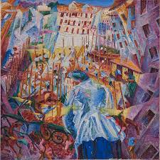

Umberto Boccioni
Umberto Boccioni è stato uno dei principali artisti del movimento futurista italiano, nato nel 1882 a Reggio Calabria. La sua breve vita fu intensamente dedicata all'arte e alla sperimentazione, influenzando profondamente il panorama artistico del suo tempo. Fin da giovane dimostrò un talento eccezionale per il disegno e la pittura, studiando all'Accademia di Belle Arti di Roma e poi a Milano. Tuttavia, fu solo quando entrò in contatto con il movimento futurista che Boccioni trovò la sua vera vocazione.
